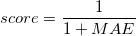
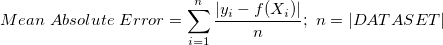

Página desenvolvida para mostrar a possibilidade de aplicação do algoritmo SymTree para Regressão Simbólica com baixo custo computacional. Essa ferramenta pode ser utilizada como auxiliar de laboratórios didáticos em que são feitos experimentos de mensuração para verificar relações vistas em sala de aula. A tecnologia utilizada é a linguagem JavaScript e, portanto, executa o algoritmo no próprio navegador do usuários. Experimente!
Quadro de avisos
O site ainda está em desenvolvimento. Podem ocorrer problemas durante a execução de algumas operações. Críticas e sugestões são bem vindas. Informações de contato no final da página.
Os dados de entrada podem ser digitados ou carregados através de um arquivo .csv. O formato de entrada devem primeiro conter as variáveis de entrada e, em seguida, a variável de medição: x1, x2, ...,y. Opcionalmente, a primeira linha pode conter os nomes das variáveis (clique na caixa correspondente para ativar essa opção);
Escolha o algoritmo a ser executado;
Após finalizar o processamento, o site irá exibir os resultados da regressão simbólica.
Os dados podem ser digitados manualmente, ou você pode fazer o upload de um arquivo .csv contendo seus dados. Caso queira, a primeira linha pode ser usada para nomear as variáveis. No site há uma página mais elaborada sobre os dados de entrada;
Com os dados carregados, basta escolher um algoritmo abaixo:
Para qualificar as expressões criadas pelos algoritmos, usamos o score. O score é uma classificação para a expressão, de acordo com o quão bem esta expressão se ajusta ao DATASET de entrada, e varia de 0 a 1. O score é calculado por:

Onde o MAE (desvio médio absoluto) é igual ao somatório das diferenças entre os valores da variável dependente yi e os valores calculados pela expressão para Xi:

Algoritmo SymTree
Este algoritmo inicia sua busca a partir de uma solução representando uma regressão linear. A cada iteração ele aplica as operações de interação entre as variáveis e transformação, gerando funções incrementalmente mais complexas. Esse algoritmo é executado por oito iterações. Mais detalhes pode ser visto em:
Algoritmo IT-LS
O algoritmo funciona criando uma população inicial de expressões aleatórias e selecionando a melhor dentre elas. Após isso, executa uma busca local na equação, mudando ou as funções não-lineares ou os expoentes da equação, repetindo o processo até que não exista uma modificação que melhore ainda mais o score da equação. Esse algoritmo é executado até no máximo 50 iterações.
Algoritmo IT-ES
O algoritmo funciona criando uma população de expressões aleatórias, e então executa um algoritmo de Estratégia Evolutiva ES-(mu, lambda). Esse algoritmo foi executado apenas com mutação, mu=150, lambda=45 e 150 iterações
A Regressão Simbólica tem por objetivo encontrar a função geradora de uma base de dados amostrais. Ela difere de outros tipos de regressão pois não está restrito a uma forma fixa como em métodos de regressão linear, polinomial e redes neurais. Normalmente, a Regressão Simbólica é feita através de Algoritmos Evolutivos (ex.: Programação Genética), mas esses costumam ser computacionalmente custosos, mesmo em bases de dados de baixa dimensão.
Esse projeto tem como objetivo mostrar o potencial do algoritmo SymTree para dados de baixa dimensão e gerados por funções conhecidas da Física, Matemática e Engenharia.
Esse projeto foi desenvolvido por Guilherme Aldeia como parte de sua iniciação científica orientado pelo prof. Fabricio Olivetti de França na Universidade Federal do ABC.
Dúvidas, críticas ou sugestões?
Contate o desenvolvedor pelo email: guilherme.aldeia@aluno.ufabc.edu.br
ou seu orientador: folivetti@ufabc.edu.br
Além disso, veja os algoritmos desenvolvidos durante os estudos do projeto!